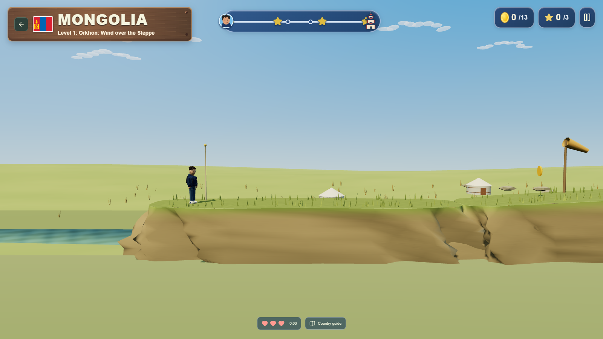
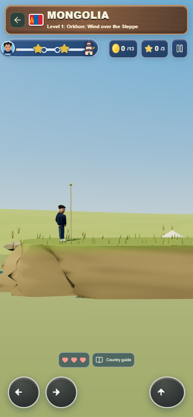

Mongolia terrain seam
Revision 2 testing candidate · presentation-only patch
37 focused checks and production build passed. Collisions and mechanics unchanged. Human playtests, account-save and physical-phone checks remain pending; 60 FPS is unverified. All release flags remain false.
Focused findings · Human playtest plan · Ten-session sheet · Validation · Original revision 2 gallery
Desktop
 Revision 2 before
Revision 2 before
Focused fix afterPortrait phone emulation
 Revision 2 before
Revision 2 before
Focused fix afterAdditional desktop and mobile views
Human results received: none. All ten sessions remain NOT_RUN.